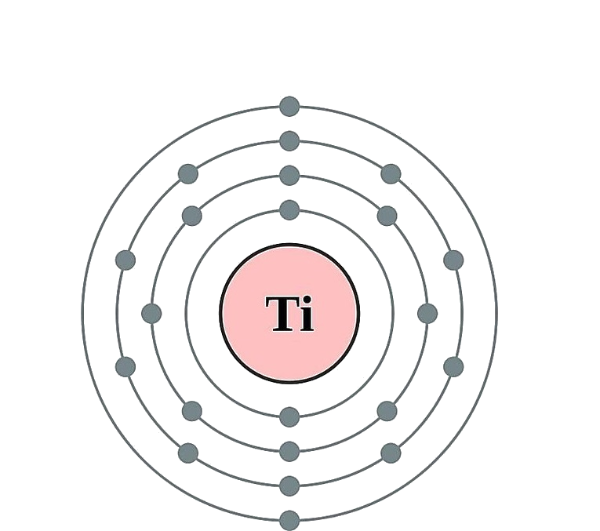

←
→
Titanium is a chemical element with symbol Ti and atomic number 22. It is a lustrous transition metal with a silver color, low density, and high strength. Titanium is resistant to corrosion in sea water, aqua regia, and chlorine.
Titanium was discovered in Cornwall, Great Britain, by William Gregor in 1791, and was named by Martin Heinrich Klaproth after the Titans of Greek mythology. The element occurs within a number of mineral deposits, principally rutile and ilmenite, which are widely distributed in the Earth's crust and lithosphere, and it is found in almost all living things, water bodies, rocks, and soils. The metal is extracted from its principal mineral ores by the Kroll and Hunter processes. The most common compound, titanium dioxide, is a popular photocatalyst and is used in the manufacture of white pigments. Other compounds include titanium tetrachloride (TiCl4), a component of smoke screens and catalysts; and titanium trichloride (TiCl3), which is used as a catalyst in the production of polypropylene.
Titanium can be alloyed with iron, aluminium, vanadium, and molybdenum, among other elements, to produce strong, lightweight alloys for aerospace (jet engines, missiles, and spacecraft), military, industrial processes (chemicals and petrochemicals, desalination plants, pulp, and paper), automotive, agri-food, medical prostheses, orthopedic implants, dental and endodontic instruments and files, dental implants, sporting goods, jewelry, mobile phones, and other applications.
The two most useful properties of the metal are corrosion resistance and strength-to-density ratio, the highest of any metallic element. In its unalloyed condition, titanium is as strong as some steels, but less dense. There are two allotropic forms[10] and five naturally occurring isotopes of this element, 46Ti through 50Ti, with 48Ti being the most abundant (73.8%). Although they have the same number of valence electrons and are in the same group in the periodic table, titanium and zirconium differ in many chemical and physical properties.